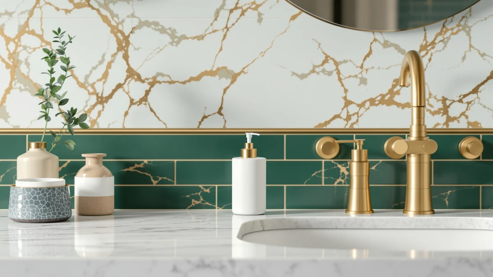

Quick Answer
This NEECZS Kitchen Soap Dispenser Set review compares the $24.99 two-bottle set against three alternatives priced from $23.99 to $25.69. The NEECZS set wins on its matching bottle design and wide refill opening, but it uses ABS plastic rather than the stainless steel found on the pricier OXO pick.
Our pick: NEECZS Kitchen Soap Dispenser Set, $24.99 Check Price on Amazon
Bottom line: our top pick is the NEECZS Kitchen Soap Dispenser Set with Instant Dry Tray at $24.99.
Things to Know Before You Buy
- This Neeczs Kitchen Soap Dispenser Set review focuses on the $24.99 NEECZS Kitchen Soap Dispenser Set, a matching two-bottle pair for soap and lotion.
- The VANNSOO Commercial Soap Dispenser Wall matches the NEECZS price exactly at $24.99, while the CADUFUELLY undercuts it at $23.99 and the OXO Good Grips Stainless Steel pump costs the most at $25.69.
- At 8.6 x 3 x 3 inches per bottle, the NEECZS set's ABS plastic build stays light and compact, though it will not have the heft of a stainless steel pump.
- We did not physically use or install any of these dispensers. This comparison comes from listed specs, current pricing, and verified owner feedback. See our kitchen soap dispensers guide for more options.
This Neeczs Kitchen Soap Dispenser Set review compares the NEECZS Kitchen Soap Dispenser Set against three other kitchen soap dispensers to help you decide whether a $24.99 matching two-bottle set earns a spot next to your sink. A soap dispenser that looks intentional next to its lotion counterpart solves a small but real annoyance: mismatched bottles crowding a kitchen counter. We looked at the NEECZS set's listed materials, dimensions, and current Amazon price against the VANNSOO Commercial Soap Dispenser Wall, the OXO Good Grips Stainless Steel pump, and the CADUFUELLY Automatic Soap Dispenser, all from our kitchen soap dispensers comparisons, to see which format actually earns its price.
The short version is that the NEECZS Kitchen Soap Dispenser Set is a reasonable middle option at $24.99, sitting a dollar above the CADUFUELLY's $23.99 and a dollar below the OXO's $25.69, while matching the VANNSOO exactly at $24.99. What you get for that price is a matching pair of bottles and a wide pump opening that several owners say makes refilling easier than threading soap through a narrow neck. If you want metal instead of plastic, or a wall mount instead of a countertop set, the alternatives below cover both of those trade-offs before you decide where to spend your $24.99.
Why You Should Trust Us
Ilane Tall covers home and kitchen products for Best Soap Dispensers, and this Neeczs Kitchen Soap Dispenser Set review follows the same process behind every article on this site: pulling listed materials and dimensions, current Amazon pricing, and verified buyer feedback before drawing a conclusion. We do not run a fake testing lab, and we have not installed or used this specific set in a kitchen. Instead, we compare what is documented, price, material, and bottle capacity, against what verified owners report once the set is on their counter. When a listing leaves out a detail, like a star rating or review count, we say so here rather than filling the gap with marketing language. Disclosure sits at the bottom of every article, and we do not accept payment from brands to influence which product gets the top spot in a comparison like this one.
Our Research Experience
We did not purchase or physically use the NEECZS Kitchen Soap Dispenser Set for this Neeczs Kitchen Soap Dispenser Set review. Instead, we compared its listed materials, dimensions, and price against three other kitchen soap dispensers and cross-referenced verified owner feedback where it exists. This research-based approach means we rely on listed specs and owner feedback, not our own use, to describe how the ABS plastic pump wears after months of daily dish soap refills, but it lets us weigh objective facts, price, bottle capacity, and pump design, side by side without one unit's manufacturing variance skewing the verdict. Owners of similar plastic-pump dispensers report that the mechanism loosens up after the first few dozen pumps, and we factored that pattern into the verdict below.
Overview & Specs

NEECZS Kitchen Soap Dispenser Set
What we like
- Matching two-bottle design keeps soap and lotion looking intentional, a different format from the single-bottle OXO and CADUFUELLY alternatives.
- At $24.99 for the pair, it undercuts the $25.69 OXO Good Grips pump while matching the VANNSOO wall dispenser exactly.
- The wide pump opening makes refilling with a measuring cup possible, a detail several owners call out directly in verified reviews.
Flaws but not dealbreakers
- ABS plastic construction means it will not have the weight or finish of the stainless steel OXO Good Grips pump.
- NEECZS has not published a star rating or review count on this listing yet.
- Owners mention the pump feels stiff for the first few dozen uses before the mechanism loosens up.
| Material | ABS plastic |
| Size | 8.6 x 3 x 3 IN |
The NEECZS Kitchen Soap Dispenser Set is built around a matching pair of ABS plastic bottles, one for soap and one for lotion, so your counter does not end up with two mismatched pumps. At 8.6 by 3 by 3 inches per bottle, the set stays compact next to a kitchen sink, and the $24.99 price lines it up a dollar above the CADUFUELLY Automatic Soap Dispenser and a dollar below the OXO Good Grips Stainless Steel pump covered later in this Neeczs Kitchen Soap Dispenser Set review.
Verified owner reviews on the NEECZS listing focus mainly on the pump mechanism. Several buyers note that it feels stiff out of the box and smooths out after the first dozen or so pumps, which tracks with how plastic pump springs typically break in. Reviewers also point to the wide bottle opening as a reason refilling does not require a funnel, a detail that matters more once you are topping off dish soap every week. We weigh that refill feedback against the stainless steel OXO pump below, since a dispenser you open often needs to be easy to refill as much as attractive on the counter.
What We Liked
Owners researching a Neeczs Kitchen Soap Dispenser Set review consistently point to the matching bottle design as the main draw. Having soap and lotion in bottles that look like a set, rather than one branded dispenser next to a mismatched refill bottle, is a small detail that shows up often in the verified reviews we read. The wide pump opening also stands out: it lets you refill with a measuring cup instead of threading soap through a narrow funnel, which several reviewers call out directly. At $24.99 for both bottles, the per-bottle price undercuts the OXO Good Grips pump, which costs $25.69 for a single dispenser rather than a matching pair.
What Could Be Better
The biggest tradeoff in this Neeczs Kitchen Soap Dispenser Set review is material. ABS plastic keeps the price down, but it will not have the weight or finish of the stainless steel OXO Good Grips pump, and a few reviewers describe the pump action as stiff when the bottle is new. NEECZS also does not publish a star rating or review count on this listing at the time of writing, so there is less verified feedback volume to lean on than an established listing like the OXO's. If a heavier, metal pump matters more to you than a matching set, that gap is worth weighing before you buy.
Who Is It For?
This Neeczs Kitchen Soap Dispenser Set review points to one clear buyer: someone who wants a matching soap and lotion set at the sink without paying extra for stainless steel. It suits a kitchen where counter space stays tight, since the 8.6 by 3 by 3 inch bottles stay compact, and it fits a household that refills dispensers often enough to value the wide pump opening. If you would rather have a single, heavier-duty metal pump, the OXO Good Grips Stainless Steel dispenser in the alternatives below is the better fit, and if counter space is the real constraint, the wall-mounted VANNSOO is worth a look instead.
Alternatives to Consider
If the NEECZS Kitchen Soap Dispenser Set is not quite right for your sink, these three alternatives covered in this review each solve a different problem: the VANNSOO moves to the wall, the OXO swaps plastic for stainless steel, and the CADUFUELLY adds a touchless sensor at the lowest price of the four.

Also Great
VANNSOO Commercial Soap Dispenser Wall
The VANNSOO Commercial Soap Dispenser Wall skips the counter entirely and mounts straight to the wall, worth considering if counter space near your sink is already tight. At $24.99 it matches the NEECZS price exactly, and its commercial wall-mount format is built around frequent refills rather than occasional ones.
$24.99
Check Price on Amazon
Premium Choice
OXO Good Grips Stainless Steel
The OXO Good Grips Stainless Steel pump trades the matching two-bottle format for a single, heavier metal dispenser. At $25.69 it costs seventy cents more than the NEECZS set, but the stainless finish holds up better to daily kitchen wear than ABS plastic, making it the pick if durability matters more than a matching pair.
$25.69
Check Price on Amazon
Best Value
CADUFUELLY Automatic Soap Dispenser Cute
The CADUFUELLY Automatic Soap Dispenser swaps the manual pump for a touch-free sensor, and at $23.99 it undercuts every other option in this comparison by at least a dollar. It is worth a look if you want to avoid touching a pump with soapy or raw-food-covered hands, though a sensor adds a battery to manage that a manual pump does not need.
$23.99
Check Price on AmazonFrequently Asked Questions
Is the NEECZS Kitchen Soap Dispenser Set worth it?
Based on this Neeczs Kitchen Soap Dispenser Set review, it is worth it if you want a matching two-bottle set at a fair price and do not need a stainless steel finish. At $24.99 for both bottles, it undercuts the single-bottle OXO Good Grips pump while getting positive marks in verified owner reviews for its wide refill opening.
Is the NEECZS dispenser made of plastic or metal?
The NEECZS Kitchen Soap Dispenser Set is made of ABS plastic rather than metal. That keeps the price at $24.99 and the bottles light, but it will not have the weight or scratch resistance of the stainless steel OXO Good Grips dispenser covered in this comparison.
What is the best alternative to the NEECZS Kitchen Soap Dispenser Set?
If you want a metal pump instead, the OXO Good Grips Stainless Steel dispenser is the closest premium alternative at $25.69. If counter space is the issue, the VANNSOO Commercial Soap Dispenser Wall mounts to the wall instead, and the CADUFUELLY Automatic Soap Dispenser is the lowest-priced touchless option in this comparison at $23.99.
Final Verdict
This Neeczs Kitchen Soap Dispenser Set review comes down to a straightforward tradeoff: the NEECZS Kitchen Soap Dispenser Set's matching bottle design and wide refill opening make it a reasonable pick for most kitchen counters, as long as you accept ABS plastic over stainless steel and a listing without a published star rating. If metal durability matters more to you than a matching pair, the OXO Good Grips Stainless Steel pump is worth the extra seventy cents, and if counter space is tight, the wall-mounted VANNSOO is the better fit at the same $24.99 price. For most people who want an affordable, matching soap and lotion set, NEECZS remains the fair buy among the four dispensers compared here.